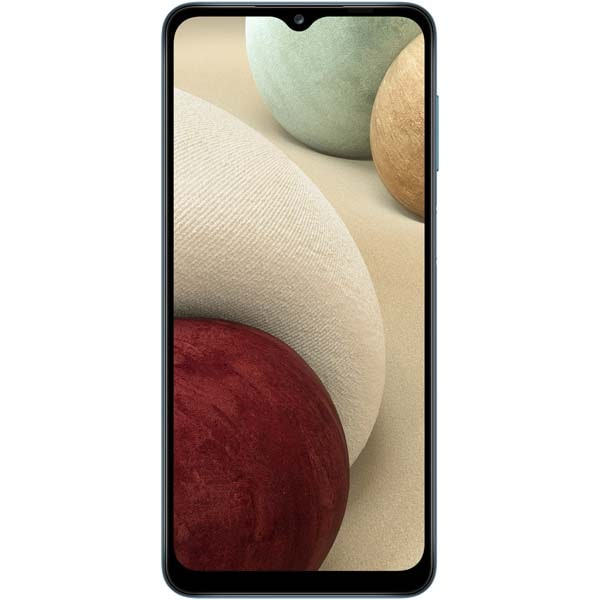

Telefoane Mobile:
Oferte speciale si produse noi!
Telefon SAMSUNG Galaxy A12 4G, 64GB, 4GB RAM
10% reduceri la noile produse samsung! Oferim servicii de reparare si reconditionare a telefoanelor mobile!
Intrebari frecvente:
Unde se afla magazinul?
Magazinul se afla pe Bulevardul Iuliu Maniu nr. 7, București 061072
Ce telefoane reparati?
Reparam orice tip de telefon gasit pe piata!
Programul de lucru?
Luni-Vineri:09-19
Sambata-Duminica:09-13